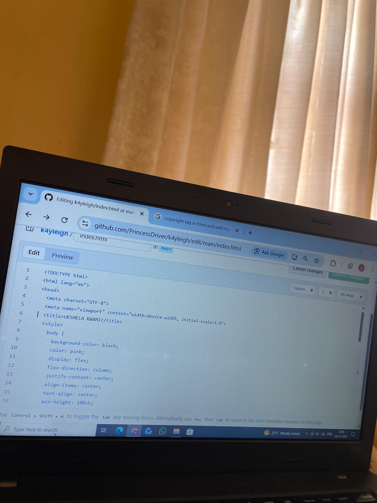

<figure style="margin-top:40px; text-align:center;">\n  \n  <figcaption style="margin-top:8px; color:#ccc; font-size:1.1em;">\n    This is proof that I created the website\n  </figcaption>\n</figure>\n